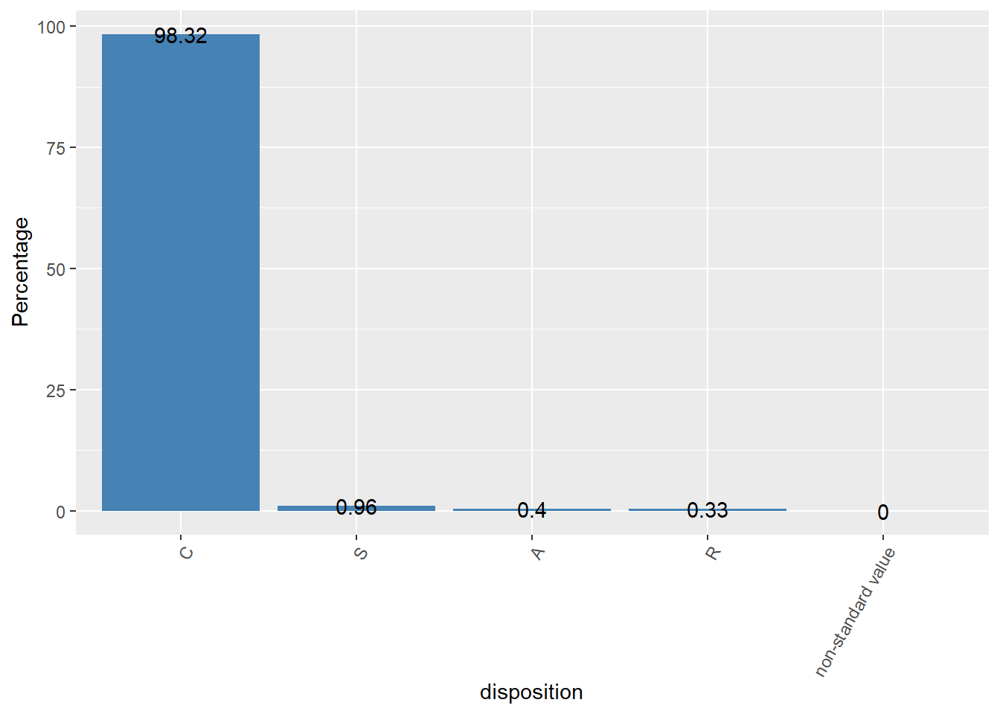
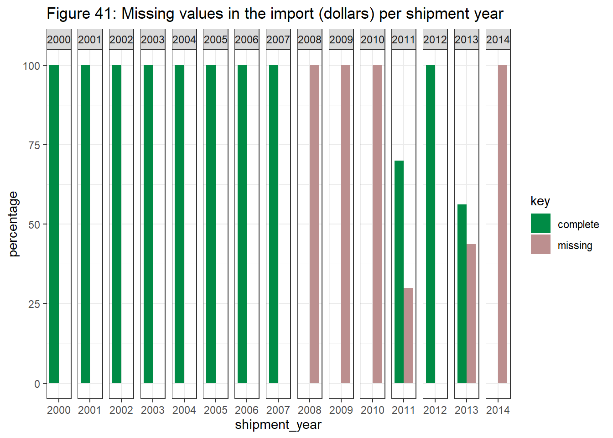
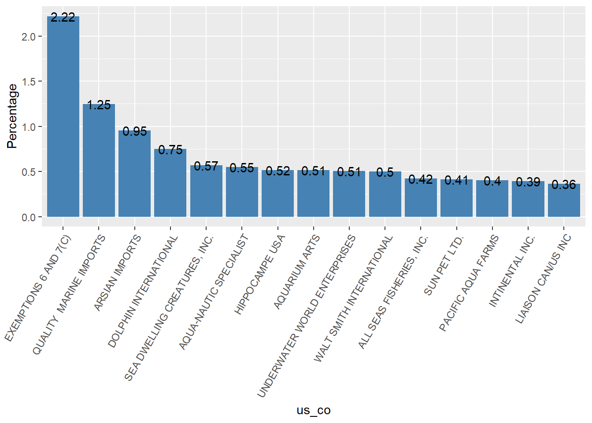
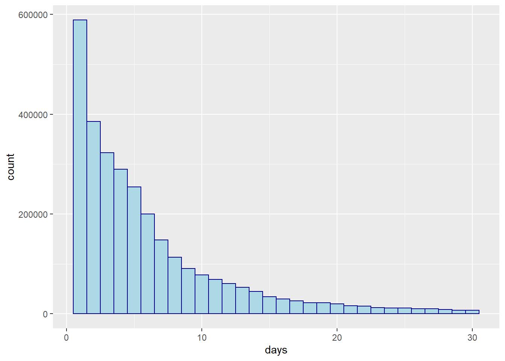

Chapter 3 Univariable Analysis
Here you can check data fields and fields descriptions for all variables appearing in the dataset
Variables related with the trade process:
- control_number: It represents a unique individual shipment processed by the USFWS.
- quantity: It represents the numeric quantity of the wildlife produc
- unit: It represents the unit for the numeric quantity
- import_export: It represents whether the shipment is an (I)mport or (E)xport
- action: Action taken by USFWS on import ((C)leared/(R)efused)
- shipment_date: Full date when shipment arrived
- shipment_year: Year when the shipment arrived (derived from “shiptment_year”)
- disposition: Fate of the import
- disposition_date: Full date when disposition occurred
- disposition_year: Year when disposition occurred (derived from “disposition_date”)
Variables related with the countries:
- country_origin: It represents the code for the country of origin of the wildlife product
- country_imp_exp: It represents the code for the country to/from which the wildlife product is shipped
- port: It represents the port or region of shipment entry
- us_co: It represents the US party of the shipment
- foreign_co: It represents the foreign party of the shipment
Variables related with the product:
- description: It represents the type/form of the wildlife product
- value: It represents the reported value of the wildlife product in US dollars
- purpose: It represents the reason the wildlife product is being imported
- source: It represents the type of source within the origin country (e.g., wild, bred)
- species_code: It represents the USFWS code for the wildlife product
- taxa: It represents the USFWS-derived broad taxonomic categorization
- class: It represents the EHA-derived class-level taxonomic designation
- genus: It represents the Genus (or higher-level taxonomic name) of the wildlife product
- species: It represents species of the wildlife product
- subspecies: It represents subspecies of the wildlife product
- specific_name: It represents a specific common name for the wildlife product
- generic_name: It represents a general common name for the wildlife product
3.1 Variables related with the trade process:
3.1.1 control_number & shipment_date
It represents a unique individual shipment processed by the USFWS.
- There are 2,088,676 unique shiptments
- Different wildlife products contained within the same shipment may be represented in the LEMIS data by multiple data rows, all of which share a common ‘control_number’.
- All rows of data sharing the same ‘control_number’ share the same country of shipment and shipment date.
Let’s summarized the number of unique shipments per month.
unique_shipments_year <-data %>%
group_by(year= year(shipment_date),month = month(shipment_date)) %>%
summarise(unique_shipments = n_distinct(control_number))
unique_shipments_year$date <- as.yearmon(paste(unique_shipments_year$year,
unique_shipments_year$month), "%Y %m")
ggplot(unique_shipments_year, aes(x = date, y = unique_shipments)) +
geom_line(color='steelblue') + scale_x_continuous()
Let’s see the pattern depending on the week of the year
unique_shipments_week <-data %>%
group_by(year= year(shipment_date), week=week(shipment_date)) %>%
summarise(unique_shipments = n_distinct(control_number))
ggplot(unique_shipments_week, aes(x = week, y = unique_shipments, color=factor(year))) +
geom_line() 
3.1.2 quantity
It represents the numeric quantity of the wildlife product Let’s check the total quantity per month.
quantity_per_month <-data %>%
group_by(year= year(shipment_date),month = month(shipment_date)) %>%
summarise(quantity = sum(quantity))
quantity_per_month$date <- as.yearmon(paste(quantity_per_month$year,
quantity_per_month$month), "%Y %m")
ggplot(quantity_per_month, aes(x = date, y = quantity)) +
geom_line(color='steelblue') + scale_x_continuous()
3.1.3 unit
It represents the unit for the numeric quantity
- There are 13 units.
- The NO unit represents 94.5% of data
units <-data %>% group_by(unit) %>%
summarise(total=n()/nrow(data) *100) %>%
drop_na(unit) %>%
arrange(desc(total))
ggplot(data=units, aes(x=reorder(unit, -total), y=total)) +
geom_bar(stat="identity",fill="steelblue") +
geom_text(aes(label=round(total,2)))+
theme(axis.text.x = element_text(angle=60, hjust=1)) +
labs(y = "Percentage", x="units") 
3.1.4 import_export
It represents Whether the shipment is an (I)mport or (E)xport. In this dataset, 100% of the data is an import.
data %>% group_by(import_export) %>%
summarise(total=n()/nrow(data)*100) %>%
ggplot(aes(x=import_export, y=total)) +
geom_bar(stat="identity",fill="steelblue") +
geom_text(aes(label=round(total,2)))+
theme(axis.text.x = element_text(angle=60, hjust=1)) +
labs(y = "Percentage", x="import_export")  ### action
Action taken by USFWS on import ((C)leared/(R)efused)
### action
Action taken by USFWS on import ((C)leared/(R)efused)
- 98.7% of imports are cleared, just 1.73% is refused
action <-data %>% group_by(action) %>%
summarise(total=n()/nrow(data) *100) %>%
drop_na(action) %>%
arrange(desc(total))
ggplot(data=action, aes(x=reorder(action, -total), y=total)) +
geom_bar(stat="identity",fill="steelblue") +
geom_text(aes(label=round(total,2)))+
theme(axis.text.x = element_text(angle=60, hjust=1)) +
labs(y = "Percentage", x="action") 
3.1.5 disposition
It represents the fate of the import
- There are 5 categories: C, S, A, R and non-standard value
- The C category represents 98.3% of data
disposition <-data %>% group_by(disposition) %>%
summarise(total=n()/nrow(data) *100) %>%
drop_na(disposition) %>%
arrange(desc(total))
ggplot(data=disposition, aes(x=reorder(disposition, -total), y=total)) +
geom_bar(stat="identity",fill="steelblue") +
geom_text(aes(label=round(total,2)))+
theme(axis.text.x = element_text(angle=60, hjust=1)) +
labs(y = "Percentage", x="disposition") 3.1.6 disposition_date
It represents the full date when disposition occurred
- While ‘shipment_date’ entries fell completely within the time period of 2000–2014, ‘disposition_date’ ranged more widely
- Users should be wary of any disposition date values that precede the associated shipment date, as we are unaware of how this could represent an accurate accounting of the product disposition process. However, for many potential analyses, differences in the date fields may not be a significant cause for concern because ‘shipment_date’ alone provides a sound index for those interested in temporal trends in wildlife trade
It seems that 54% occur within a month of the shipment date (most of them within a week)
days<- data %>%
mutate(days = as.numeric(disposition_date - shipment_date)) %>%
filter(days > 0 & days < 31)
ggplot(days, aes(x=days))+
geom_histogram(color="darkblue", fill="lightblue")## `stat_bin()` using `bins = 30`. Pick better value with `binwidth`.
3.2 Variables related with the countries
3.2.1 country_origin
It represents the code for the country of origin of the wildlife product
- There are 252 countries of origin
- The top 15 represents 74.2% of data
- The top 50 represents 94.3% of data
country_origin <-data %>% group_by(country_origin) %>%
summarise(total=n()/nrow(data) *100) %>%
drop_na(country_origin) %>%
arrange(desc(total)) %>% top_n(15, total)
ggplot(data=country_origin, aes(x=reorder(country_origin, -total), y=total)) +
geom_bar(stat="identity",fill="steelblue") +
geom_text(aes(label=round(total,2)))+
theme(axis.text.x = element_text(angle=60, hjust=1)) +
labs(y = "Percentage", x="country_origin")  ### country_imp_exp
It represents the code for the country to/from which the wildlife product is shipped
### country_imp_exp
It represents the code for the country to/from which the wildlife product is shipped
- There are 257 countries to/from which the product is shipped
- The top 15 represents 75.6% of data
- The top 50 represents 95.8% of data
country_imp_exp <-data %>% group_by(country_imp_exp) %>%
summarise(total=n()/nrow(data) *100) %>%
drop_na(country_imp_exp) %>%
arrange(desc(total)) %>% top_n(15, total)
ggplot(data=country_imp_exp, aes(x=reorder(country_imp_exp, -total), y=total)) +
geom_bar(stat="identity",fill="steelblue") +
geom_text(aes(label=round(total,2)))+
theme(axis.text.x = element_text(angle=60, hjust=1)) +
labs(y = "Percentage", x="country_imp_exp") 
Most problematic countries are on both sides (country of origin & country to/from which the wildlife product is shipped)
country_origin <-data %>% group_by(country_origin) %>%
summarise(total=n()/nrow(data) *100) %>%
drop_na(country_origin) %>%
arrange(desc(total)) %>% top_n(4, total) %>%
rename(country = country_origin)
country_imp_exp <-data %>% group_by(country_imp_exp) %>%
summarise(total=n()/nrow(data) *100) %>%
drop_na(country_imp_exp) %>%
arrange(desc(total)) %>% top_n(4, total) %>%
rename(country = country_imp_exp)
countries<- combine(country_origin, country_imp_exp)
ggplot(data=countries, aes(x=reorder(country, -total), y=total, fill=source)) +
geom_bar(stat="identity", position=position_dodge())+
geom_text(aes(label=round(total,2)),vjust=1.6,position = position_dodge(0.9), size=3.5)+
theme(axis.text.x = element_text(angle=60, hjust=1)) +
labs(y = "Percentage", x="country") 
3.2.2 port
It represents the port or region of shipment entry
- There are 73 ports
- The top 15 represents 83.8% of data
port <-data %>% group_by(port) %>%
summarise(total=n()/nrow(data) *100) %>%
drop_na(port) %>%
arrange(desc(total)) %>% top_n(15, total)
ggplot(data=port, aes(x=reorder(port, -total), y=total)) +
geom_bar(stat="identity",fill="steelblue") +
geom_text(aes(label=round(total,2)))+
theme(axis.text.x = element_text(angle=60, hjust=1)) +
labs(y = "Percentage", x="port") 3.2.3 us_co
It represents the US party of the shipment
- There are 126,751 US parties
- The top 15 just represents 10.2% of data
- The top 50 just represents 18.9% of data
us_co <-data %>% group_by(us_co) %>%
summarise(total=n()/nrow(data) *100) %>%
drop_na(us_co) %>%
arrange(desc(total)) %>% top_n(15, total)
ggplot(data=us_co, aes(x=reorder(us_co, -total), y=total)) +
geom_bar(stat="identity",fill="steelblue") +
geom_text(aes(label=round(total,2)))+
theme(axis.text.x = element_text(angle=60, hjust=1)) +
labs(y = "Percentage", x="us_co") 
3.2.4 foreign_co
It represents the foreign party of the shipment
- There are 237,994 foreign parties
- The top 15 just represents 5.3% of data
- The top 50 just represents 12.3% of data
foreign_co <-data %>% group_by(foreign_co) %>%
summarise(total=n()/nrow(data) *100) %>%
drop_na(foreign_co) %>%
arrange(desc(total)) %>% top_n(15, total)
ggplot(data=foreign_co, aes(x=reorder(foreign_co, -total), y=total)) +
geom_bar(stat="identity",fill="steelblue") +
geom_text(aes(label=round(total,2)))+
theme(axis.text.x = element_text(angle=60, hjust=1)) +
labs(y = "Percentage", x="foreign_co") 3.3 Variables related with the product
3.3.1 description
It represents the type/form of the wildlife product
- There are 93 types/forms
- Most of them are “LIV” (29.17%), follow by TRO (16.65%) and SPR (9.43%).
- These three categories cover 74,59% of data
- The top 50 just represents 55.2% of data
description <-data %>% group_by(description) %>%
summarise(total=n()/nrow(data) *100) %>%
drop_na(description) %>%
arrange(desc(total)) %>% top_n(15, total)
ggplot(data=description, aes(x=reorder(description, -total), y=total)) +
geom_bar(stat="identity",fill="steelblue") +
geom_text(aes(label=round(total,2)))+
theme(axis.text.x = element_text(angle=60, hjust=1)) +
labs(y = "Percentage", x="description") 3.3.2 value
It represents the reported value of the wildlife product in US dollars. Let’s check the value of the most representative taxa levels (mammals, shells, reptiles, corals and fishes)
value_taxa<- data %>%
drop_na(value, taxa) %>%
mutate(value = value/quantity) %>%
filter(!is.infinite(value)) %>%
filter(taxa == "mammal" | taxa == "shell" | taxa == "reptile" | taxa == "coral" | taxa == "fish") %>%
select(taxa, value) %>%
mutate(grouped_value = ifelse(value<6, "0",
ifelse(value>=6 & value<=10, "6-10",
ifelse(value>=6 & value<=10, "6-10",
ifelse(value>=11 & value<=15, "11-15",
ifelse(value>=16 & value<=30, "16-30",
ifelse(value>=31 & value<=60, "31-60",
ifelse(value>=61 & value<=90, "61-90",
ifelse(value>=91 & value<=200, "91-200",
ifelse(value>=201 & value<=300, "201-300",
ifelse(value>=301 & value<=500, "301-500",
"More than 500"))))))))))) %>%
mutate(grouped_value = as.factor(grouped_value)) %>%
group_by(taxa, grouped_value) %>% summarise(total=n())
ggplot(value_taxa,aes(x=grouped_value,y=total,fill=taxa))+
geom_bar(stat="identity")+
theme(axis.text.x = element_text(angle=60, hjust=1)) +
labs(x="Dollars", y="Count") +
facet_wrap(~taxa,scales = "free_x" )3.3.3 purpose
It represents the reason the wildlife product is being imported - There are 13 purpose levels - The T purpose represents 74.51% of the data.
purpose <-data %>% group_by(purpose) %>%
summarise(total=n()/nrow(data) *100) %>%
drop_na(purpose) %>%
arrange(desc(total))
ggplot(data=purpose, aes(x=reorder(purpose, -total), y=total)) +
geom_bar(stat="identity",fill="steelblue") +
geom_text(aes(label=round(total,2)))+
theme(axis.text.x = element_text(angle=60, hjust=1)) +
labs(y = "Percentage", x="purpose") 
3.3.4 source
It represents the type of source within the origin country (e.g., wild, bred) - There are 10 source levels - The W source represents 78% of the data
source <-data %>% group_by(source) %>%
summarise(total=n()/nrow(data) *100) %>%
drop_na(source) %>%
arrange(desc(total))
ggplot(data=source, aes(x=reorder(source, -total), y=total)) +
geom_bar(stat="identity",fill="steelblue") +
geom_text(aes(label=round(total,2)))+
theme(axis.text.x = element_text(angle=60, hjust=1)) +
labs(y = "Percentage", x="source") 
3.3.5 species_code
It represents the USFWS code for the wildlife product
- There are 15,526 unique species codes
- The top 15 represents 29.7% of data
- The top 50 represents 50.2% of data
species_code <-data %>% group_by(species_code) %>%
summarise(total=n()/nrow(data) *100) %>%
arrange(desc(total)) %>% top_n(15, total)
ggplot(data=species_code, aes(x=reorder(species_code, -total), y=total)) +
geom_bar(stat="identity",fill="steelblue") +
geom_text(aes(label=round(total,2)))+
theme(axis.text.x = element_text(angle=60, hjust=1)) +
labs(y = "Percentage", x="Species Code") 3.3.6 taxa
It represents the USFWS-derived broad taxonomic categorization
- There are 14 taxa levels
- There is a ‘taxa’ field for the vast majority (>99%) of records
- Most of them are mammals (28.84%), follow by shells (20.11%), reptiles (13.14%) and corals (12.48%). These four categories represent 74,59% of data
taxa <-data %>% group_by(taxa) %>%
summarise(total=n()/nrow(data)*100) %>%
arrange(desc(total))
ggplot(data=taxa, aes(x=reorder(taxa, -total), y=total)) +
geom_bar(stat="identity",fill="steelblue") +
geom_text(aes(label=round(total,2)))+
theme(axis.text.x = element_text(angle=60, hjust=1)) +
labs(y = "Percentage", x="taxa") 
3.3.7 class
It represents the EHA-derived class-level taxonomic designation - There are 63 classes - The top 15 represents 91.96% of data
class <-data %>% group_by(class) %>%
summarise(total=n()/nrow(data) *100) %>%
drop_na(class) %>%
arrange(desc(total)) %>% top_n(15, total)
ggplot(data=class, aes(x=reorder(class, -total), y=total)) +
geom_bar(stat="identity",fill="steelblue") +
geom_text(aes(label=round(total,2)))+
theme(axis.text.x = element_text(angle=60, hjust=1)) +
labs(y = "Percentage", x="class") 3.3.8 genus
It represents the Genus (or higher-level taxonomic name) of the wildlife product
- There are 6506 genus levels
- The top 15 represents 33.4% of data
- The top 50 represents 57.0% of data
genus <-data %>% group_by(genus) %>%
summarise(total=n()/nrow(data) *100) %>%
drop_na(genus) %>%
arrange(desc(total)) %>% top_n(15, total)
ggplot(data=genus, aes(x=reorder(genus, -total), y=total)) +
geom_bar(stat="identity",fill="steelblue") +
geom_text(aes(label=round(total,2)))+
theme(axis.text.x = element_text(angle=60, hjust=1)) +
labs(y = "Percentage", x="genus") 3.3.9 species
It represents species of the wildlife product. After removing plants and microorganisms:
It seems that there are 8,083 different species. We decided to exclude some elements like “freshwater sp.”, “including goldfish”, “marine sp”, “in trop fish &” and “sp”, due to they are not specific species.
The top 15 represents 26.53 % of data
The top 50 represents 41.46 % of data
data_species<- data %>% filter(species!="(freshwater sp.)" &
species!= "(including goldfish)" &
species!="(marine sp.)" &
species != "sp." & species != "in trop fish &")
# n_distinct(data_species$species, na.rm = TRUE) # <- 8,083
species <-data_species %>% group_by(species) %>%
summarise(total=n(), percentage= round(n()/nrow(data) *100,2)) %>%
drop_na(species) %>%
arrange(desc(total)) %>% top_n(15, total)
DT::datatable(species) %>%
formatCurrency('total',currency = "", interval = 3, mark = ",")3.3.10 subspecies
It represents subspecies of the wildlife product
- There are 451 subspecies levels
- The top 15 just represents 2.4% of data
- The top 50 just represents 2.5% of data
subspecies <-data %>% group_by(subspecies) %>%
summarise(total=n()/nrow(data) *100) %>%
filter(subspecies!="other shipments") %>%
arrange(desc(total)) %>% top_n(15, total)
ggplot(data=subspecies, aes(x=reorder(subspecies, -total), y=total)) +
geom_bar(stat="identity",fill="steelblue") +
geom_text(aes(label=round(total,2)))+
theme(axis.text.x = element_text(angle=60, hjust=1)) +
labs(y = "Percentage", x="subspecies") 3.3.11 specific_name
It represents a specific common name for the wildlife product
- There are 6734 specific names levels
- The top 15 represents 29.5% of data
- The top 50 represents 45.6% of data
specific_name <-data %>% group_by(specific_name) %>%
summarise(total=n()/nrow(data) *100) %>%
drop_na(specific_name) %>%
arrange(desc(total)) %>% top_n(15, total)
ggplot(data=specific_name, aes(x=reorder(specific_name, -total), y=total)) +
geom_bar(stat="identity",fill="steelblue") +
geom_text(aes(label=round(total,2)))+
theme(axis.text.x = element_text(angle=60, hjust=1)) +
labs(y = "Percentage", x="specific_name") 
3.3.12 generic_name
It represents a general common name for the wildlife product
- There are 2099 generic names levels
- The top 15 represents 48.7% of data
- The top 50 represents 70.8% of data
generic_name <-data %>% group_by(generic_name) %>%
summarise(total=n()/nrow(data) *100) %>%
drop_na(generic_name) %>%
arrange(desc(total)) %>% top_n(15, total)
ggplot(data=generic_name, aes(x=reorder(generic_name, -total), y=total)) +
geom_bar(stat="identity",fill="steelblue") +
geom_text(aes(label=round(total,2)))+
theme(axis.text.x = element_text(angle=60, hjust=1)) +
labs(y = "Percentage", x="generic_name")